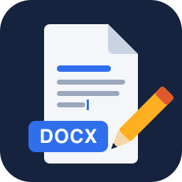
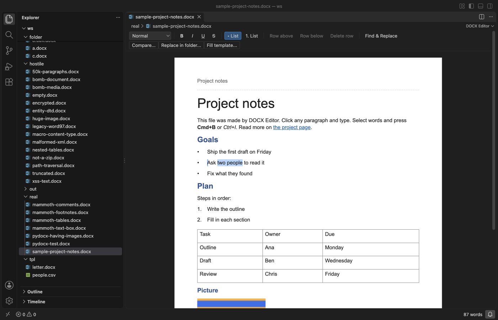
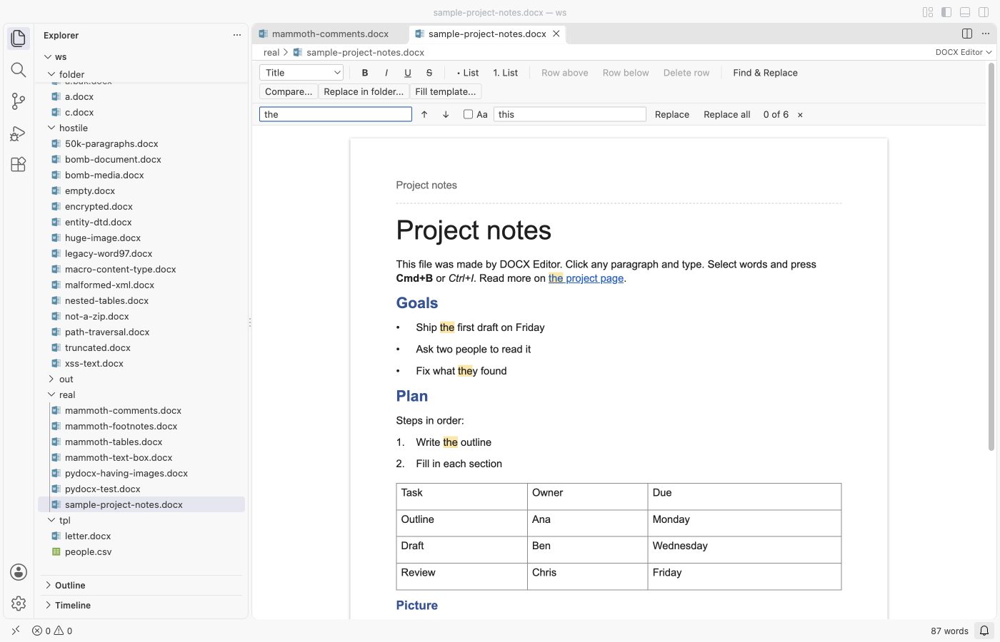
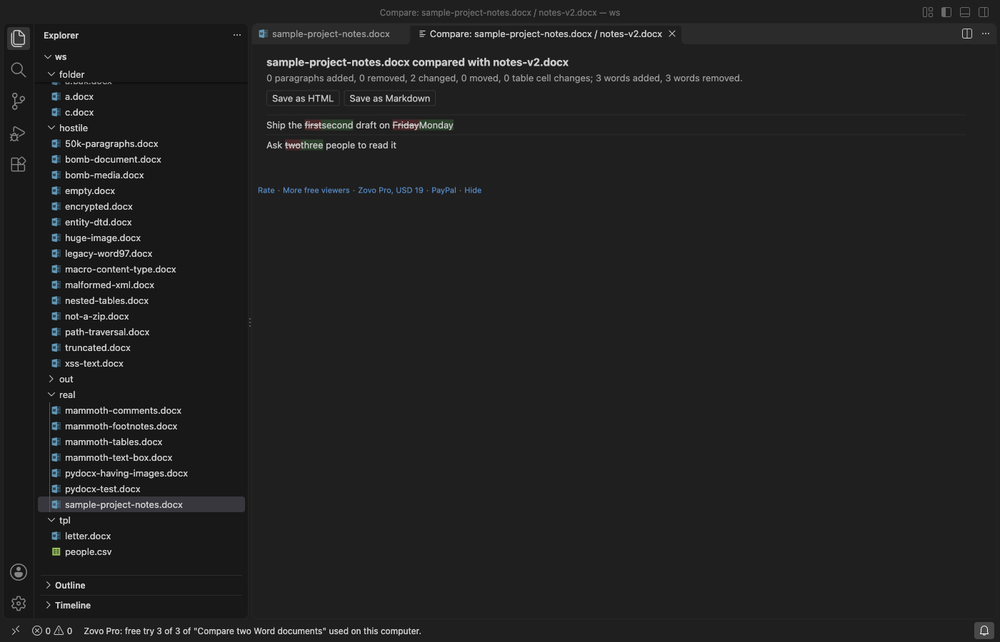

DOCX Editor & Word Editor (Edit Word Documents)
DOCX Editor & Word Editor (Edit Word Documents), a VS Code extension by Zovo
Zovo Pro: USD 19 once, every Zovo tool
Free, MIT license. Needs VS Code 1.90.0 or newer. Extension ID zovo.zovo-docx-editor, version 0.1.1.
Edit Word documents (.docx, .dotx) inside VS Code. Click a paragraph and type; make words bold, italic or underlined; pick a paragraph style; turn lists on and off; add table rows; find and replace. Save writes only what you changed, so pictures, headers, fields, tracked changes and comments stay exactly as Word wrote them. No network, no account, no Office install.

Questions people ask
Is DOCX Editor & Word Editor (Edit Word Documents) free?
Yes. DOCX Editor & Word Editor (Edit Word Documents) is free and MIT licensed.
How do I install DOCX Editor & Word Editor (Edit Word Documents)?
Click "Install in VS Code" above, or search for zovo.zovo-docx-editor in the Extensions view.
What you can edit
- Text in paragraphs and table cells. Enter starts a new paragraph with the same formatting, Shift+Enter adds a line break, Backspace at the start of a paragraph joins it to the one before.
- Bold, italic, underline and strikethrough on the selected words (Cmd+B, Cmd+I, Cmd+U, Cmd+Shift+X; Ctrl on Windows and Linux).
- Paragraph style, from the styles of the document itself: Normal, Title, Heading 1 to 6, List Paragraph and the others it defines.
- Bulleted and numbered lists, using a list definition the document already has.
- Table rows: insert above, insert below, delete.
- Find and replace in the document (Cmd+F). Plain text or
/regex/, match case. Replace all is one undo step. - Undo, Redo, Save, Save As, Revert and hot exit work as in any VS Code editor. The word count is in the status bar.
The page shows paragraph styles, headings, font sizes and colours, lists with their numbers, tables (merged cells too), pictures, links, and the header and footer of the document.
What stays as it is
DOCX Editor rewrites only word/document.xml, and inside it only the paragraphs and table rows you changed. Every other part of the package is copied byte for byte, in the same order. Open a file and save it without an edit, and you get the same file back.
A paragraph that holds something the editor cannot change safely is shown with a small lock and is never rewritten:
- fields (page numbers, tables of contents, dates), content controls, equations
- tracked changes (insertions, deletions, moves) and comments
- text boxes, SmartArt, charts and older drawing objects
- footnote and endnote references, and bookmarks that span paragraphs
Unknown XML inside a run you edit is kept, and so are the run's other properties (font, size, colour, language).
Old .doc files, password-protected files, files with macros (.docm) and Strict Open XML files open read-only, with a note that says why. Nothing is ever written to them.

Zovo Pro
Zovo Pro is USD 19 once, for the Pro tools of every Zovo extension. Each tool below has 3 free tries on your computer, and a try counts only after the tool produced its result. Everything above is free and stays free.
- Compare two Word documents: a word-level redline of two
.docxfiles with added, removed, changed and moved paragraphs and changed table cells, a summary, and the report saved as HTML or Markdown. - Find and replace in every
.docxof a folder: see the matches per file first, untick the files to skip, then replace. Each changed file is copied to<name>.bak.docxfirst (settingdocxEditor.backupBeforeReplace). - Fill a template from CSV or JSON: type
{{name}},{{date}}and so on in a document, pick a CSV or JSON file, and get one.docxper row. Placeholders that have no column are listed before anything is written.
docxEditor.showProTools: false hides the three buttons.

Commands
| Command | What it does |
|---|---|
| DOCX Editor: Open in DOCX Editor | Open a .docx or .dotx file (also in the Explorer menu) |
| DOCX Editor: Open a sample Word document | A short document with a list, a table and a picture |
| DOCX Editor: Find and replace in this document | The find bar (Cmd+F in the editor) |
| DOCX Editor: Compare two Word documents (Pro) | Redline of two files |
| DOCX Editor: Find and replace in every .docx of a folder (Pro) | Folder replace with preview and backups |
| DOCX Editor: Fill a template from CSV or JSON (Pro) | One document per data row |
Settings
| Setting | Default | |
|---|---|---|
docxEditor.showProTools | true | Show the three Pro buttons |
docxEditor.backupBeforeReplace | true | Folder replace keeps <name>.bak.docx copies |
docxEditor.showSupportLinks | true | The small links at the bottom of the editor |
docxEditor.askForRating | true | Ask once, after a few days of use, for a rating |
Limits
- Files up to 512 MB; parts are inflated with size and ratio caps, so a ZIP bomb gets a message instead of filling memory.
- Pictures larger than 40 megapixels or 16 MB are shown as a placeholder (they stay in the file).
- Opening runs in a worker thread with a time limit, so a damaged file cannot freeze VS Code.
- The page is a flowing view, not a print layout: page breaks, columns and floating shapes are not drawn where Word puts them.
- New list definitions, new styles, images and new tables are not added in this version; edit those in Word.
Install DOCX Editor & Word Editor (Edit Word Documents)
Click the button to open VS Code and install it, or press Ctrl+P (Cmd+P on macOS) in VS Code and run ext install zovo.zovo-docx-editor.
Free, MIT license. Needs VS Code 1.90.0 or newer. Extension ID zovo.zovo-docx-editor, version 0.1.1.
Source code and issues are on GitHub.
Zovo Pro and support
Zovo Pro: USD 19 once, every Zovo viewer. It turns on the Pro tools in this extension and in the other Zovo extensions you use. The free features stay free.
After a card payment your license key shows on the next page. Paste it with the command "Zovo Pro: Enter a key".
You can also support the work with no Pro:
Need your format supported?
Open a format request with a sample file, and I reply there whether it can be done. For USD 299 once, through this GitHub Sponsors tier, I add your file format or a missing feature to this extension, with tests, within 7 days.